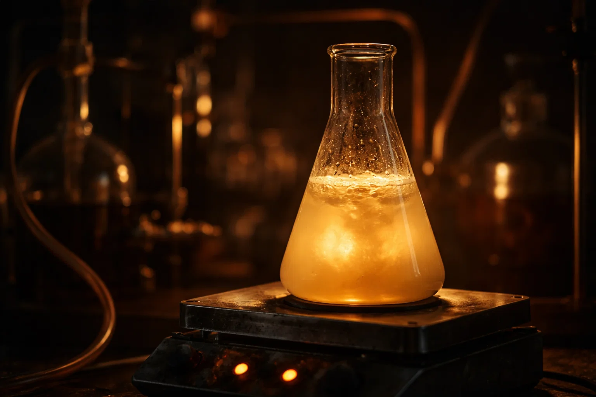
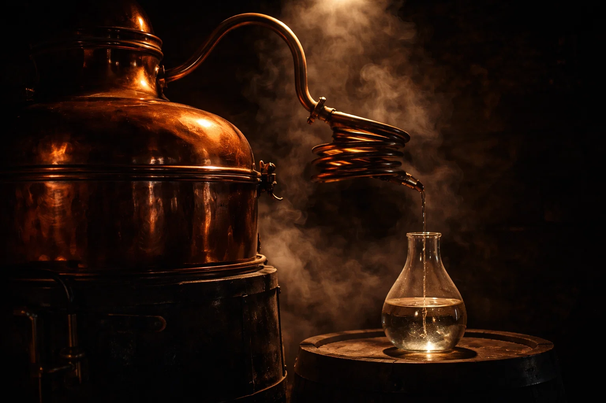
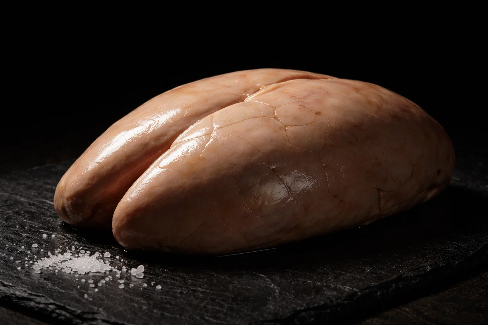
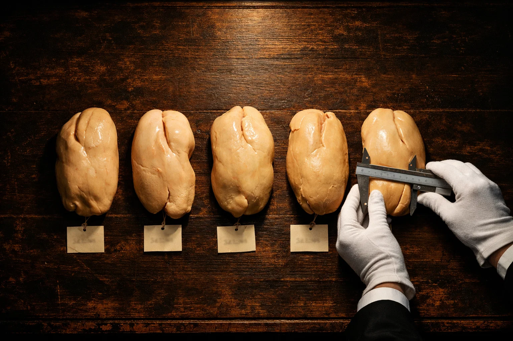
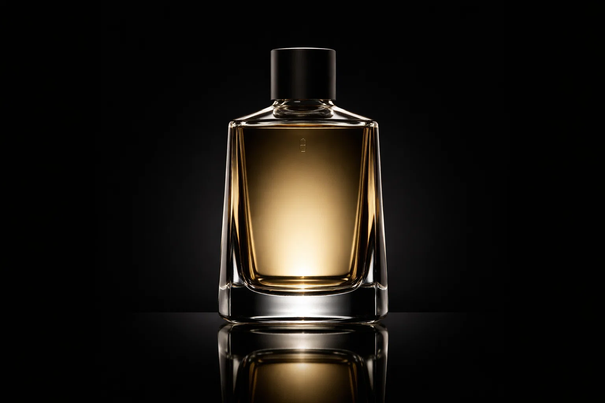
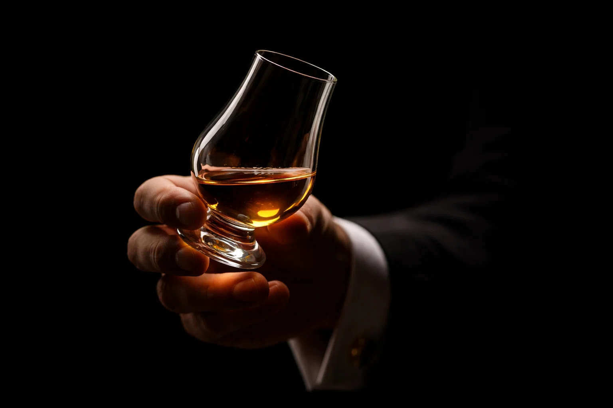

Spiritueux expérimental · Production ultra-limitée
Premier spiritueux distillé à partir de glycogène hépatique de canard gras.
Nous ne savons pas encore s'il est buvable.
C'est précisément ce qui le rend fascinant.
« On fermente le raisin depuis dix mille ans. On n'a jamais pensé à fermenter le foie gras. La question n'est pas pourquoi, mais pourquoi pas. »
Le foie d'un canard gavé contient une réserve importante de glycogène — un polymère de glucose stocké dans les cellules hépatiques. C'est cette réserve énergétique, habituellement ignorée par la gastronomie, qui constitue notre matière première.
Le procédé repose sur une cascade enzymatique en trois temps : dégradation du glycogène en glucose par des amylases hépatiques endogènes, fermentation alcoolique du moût glucosé, puis distillation lente en alambic de cuivre.


Les foies gras crus sont broyés et incubés à 37°C avec leurs propres enzymes glycolytiques (glycogène phosphorylase, amylase hépatique). Le glycogène est progressivement converti en glucose libre. Rendement typique : 8 à 12 g de glucose par foie.
Le moût hépatique est ensemencé avec une souche de Saccharomyces cerevisiae sélectionnée pour sa tolérance aux acides gras. Fermentation lente à 18°C pendant 14 jours. Le résultat est un « vin de foie » titrant environ 4 à 5% vol.
Double distillation en alambic charentais de cuivre de 50 litres. Coupe sévère : seul le cœur de chauffe est conservé. On obtient un distillat limpide, titrant entre 62 et 68% vol., au profil aromatique encore largement inexploré.
Note de transparence : Ce procédé est expérimental. Aucune étude organoleptique formelle n'a encore été conduite. Les descripteurs aromatiques mentionnés sur ce site sont issus de micro-dégustations internes, non de panels certifiés. Nous publierons nos résultats analytiques complets lorsque le Lot 001 sera stabilisé.


Il faut entre 30 et 40 foies gras de canard entiers pour produire une seule bouteille de 50 cl.
Nos foies sont sourcés exclusivement auprès de producteurs du Gers et du Périgord, sélectionnés pour la qualité de leur gavage traditionnel au maïs grain entier. Un foie plus riche en glycogène donne un meilleur rendement en glucose — et donc un distillat plus généreux.
Chaque foie est caractérisé individuellement par sa teneur en glycogène avant intégration au lot. Les foies présentant un taux inférieur à 6% sont écartés et redirigés vers les circuits gastronomiques classiques.


(Micro-dégustation interne, non certifiée — à confirmer)
Notes grasses et beurrées en attaque, évoluant vers des nuances de noisette torréfiée et de caramel blond. Fond légèrement animal, cuir fin.
Texture huileuse inhabituelle pour un spiritueux. Attaque douce, presque lactée. Milieu de bouche complexe, à la frontière du salé et du sucré. Finale longue, umami prononcé.
Persistance aromatique remarquable (>40 secondes). Rémanence de beurre noisette et de bouillon concentré. Chaleur alcoolique mesurée.
Ces chiffres n'incluent ni la R&D, ni le temps de travail, ni le conditionnement final. Ils reflètent uniquement le coût matière et process d'une bouteille de 50 cl au stade expérimental.
Le Lot 001 est en cours de stabilisation. La production est limitée à 12 bouteilles. L'inscription au registre ne constitue pas un engagement d'achat — elle vous positionne pour être contacté en priorité si le produit est jugé apte à la dégustation.
Aucun paiement requis. Vos données ne sont utilisées que pour vous contacter au sujet du Lot 001. Désincription à tout moment.